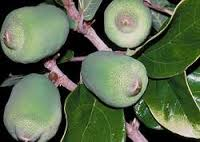

Tên khác:
Trâu cổ, cây Sộp, Vẩy ốc, Bị lệ, Vương bất lưu hành (quả), Quả non phơi khô gọi là bị lệ lạc thạch đằng
Tên khoa học: Ficus pumila L.
thuộc họ Dâu tằm - Moraceae.
Tiếng trung: 柠檬爱玉 (chanh ái ngọc)
Cây Trâu cổ
( Mô tả, hình ảnh, thu hái, chế biến, thành phần hoá học, tác dụng dược lý ....)

Mô tả:
Dây leo bò với rễ bám, có mủ trắng lúc cây còn non, có những nhánh bò mang lá không có cuống, gốc hình tim, nhỏ như vẩy ốc, ở dạng trưởng thành, có những nhánh tự do mang lá lớn hơn và có cuống dài. Cụm hoa có đế hoa bao kín dạng quả và quả sung, khi chín có màu đỏ.
Mùa hoa tháng 5-10 (ảnh số 710).
Bộ phận dùng: Rễ, dây, lá, quả - Radix, Caulis, Folium et Fructus Fici Pumilae.
Phân bố - thu hái:
Loài của phân vùng Ấn Độ - Malaixia mọc hoang và cũng thường được trồng cho bám lên tường nhà hay cây to để làm cảnh ở nhiều nơi, nhất là các thành phố, thị xã. Người ta thường dùng quả thu hái vào mùa thu, đồ chín, thái nhỏ. Cành non, thân non thu hái quanh năm. Dùng tươi hay phơi khô, dùng tươi tốt hơn.
Thành phần hoá học:
Trong vỏ quả (đế của cụm hoa dạng Sung) có tới 13% chất gôm, khi thuỷ phân cho glucose, fructose và arabinose. Trong thân và lá có một số chất như: Mesoinositol, b- sitosterol, Taraxeryl aceatate, b- amyrin.
Tác dụng dược lý:
Thực nghiệm trên súc vật chứng minh: Nước sắc của quả trâu cổ bỏ kali có tác dụng hưng phấn cổ tử cung rõ rệt, cồn ngâm kiệt tác dụng còn mạnh hơn.
Thuốc còn có tác dụng ức chế sự phát triển của ung thư phổi
Vị thuốc Trâu cổ
( Công dụng, Tính vị, quy kinh, liều dùng .... )
Tính vị: Quả có vị ngọt, tính mát;
có tác dụng tráng dương cố tinh, lợi thấp thông sữa. Dây có vị hơi đắng tính bình;
Rễ có tác dụng khư phong hoạt lạc, hoạt huyết giải độc.
Lá có vị hơi chua, chát, tính mát, có tác dụng tiêu thũng giải độc.
Liều dùng: 6-12g
Kiêng kỵ:
Phụ nữ có thai cần thận trọng
Ứng dụng lâm sàng của vị thuốc Trâu cổ
: Quả được dùng trị lỵ lâu ngày sinh lòi dom, ít sữa, tắc tia sữa, viêm tinh hoàn, phong thấp, ung thũng, cũng dùng cho người bệnh Di tinh, liệt dương, đái ra dưỡng trấp.
Dây, rễ dùng trị phong thấp tê mỏi, sang độc, ung nhọt và kinh nguyệt không đều.
Lá được dùng trị viêm khớp xương, nhức mỏi chân tay, đòn ngã tổn thương cũng dùng trị đinh sang, ngứa lở.
Dân gian còn dùng nhựa cây Sộp để bôi ghẻ lở, hắc lào.
Cách dùng: Ngày dùng 30g cành lá, 10-15g quả, 10-20g thân, dùng tươi sắc uống hoặc nấu thành cao ngày dùng 5-10g chữa đau xương, đau mình của người già, làm thuốc bổ, thuốc điều kinh, giúp sự tiêu hoá.
Có thể dùng cành lá Trâu cổ phối hợp với Ðậu đen, ngâm rượu uống bổ, chữa Di tinh, liệt dương, đau mình mẩy, Đau lưng.
Chữa tắc tia sữa, sưng vú, ít sữa
. Quả Sộp 40g, bồ công anh, lá Mua, mỗi vị 15g sắc uống. Ngoài dùng lá Bồ công anh giã nhỏ chế giấm, chưng nóng chườm, đắp. Lại dùng lá Ngải cứu khô giã tơi cuốn giấy lại như điếu thuốc lá, đốt hơ chỗ ngực ngang 2 núm vú và chỗ chân vú bên bị tắc, hơ đến mức thấy nóng rát thì thôi. (Theo lương y Lê Trần Ðức).
Chữa dương nuy, di tinh:
Dùng 12g quả trâu cổ, 12g dây sàn sạt, sắc đặc uống trong ngày
Chữa tắc tia sữa, ít sữa, sưng vú:
40g quả trâu cổ, 15g lá mua, 15g bồ công anh. Sắc uống với 500ml nước, sắc lại còn 250ml chia làm 2 lần uống trong ngày. Kết hợp dạng thuốc đắp là lá bồ công anh giã nhỏ, cho thêm ít dấm, chưng nóng lên rồi chườm ở vùng vú nhưng ở phía ngoài áo để tránh bị bỏng.
Làm rượu bổ để chữa trị chứng di tinh và liệt dương :
Dùng 100g cành, lá, quả trâu cổ non phơi khô kết hợp 50g đậu đen. Đem xay thô tất cả và ngâm trong 250ml rượu trắng, ngâm trong khoảng 10 ngày là dùng được, mỗi lần uống 1 ly nhỏ, ngày uống khoảng 10 - 30ml.
Một số bài thuốc cổ dùng quả trâu cổ
Vương Bất Lưu Hành Thang (Thánh Tế Tổng Lục, Q.86. Triệu Cát) Trị ưu tư làm tổn thương tâm, lưỡi sưng cứng.
Vương Bất Lưu Hành Tán Kim (Quỹ Yếu Lược, Q. Trung. Trương Trọng Cảnh) Hành khí huyết, thông kinh mạch. Trị vết thương làm độc (kim sang).
Vương Bất Lưu Hành Tán II (Thái Bình Thánh Huệ Phương, Q.29 Vương Hoài Ẩn) Trị hư lao, tiểu trường nhiệt, tiểu buốt, tiểu gắt.
Vương Bất Lưu Hành Tiễn (Bút Hoa Y Kính.- Giang Hàm Thôn) Trị sữa không thông làm cho vú sưng to (tia sữa tắc).
Vương Bất Lưu Hành Thang II (Cổ Kim Y Diễn, Q.3.) Trị sữa không thông xuống.
Nơi mua bán vị thuốc Trâu cổ đạt chất lượng ở đâu?
Trước thực trạng thuốc đông dược kém chất lượng, nguồn gốc không rõ ràng,... xuất hiện tràn lan trên thị trường, làm ảnh hưởng tới hiệu quả điều trị cũng như ảnh hưởng tới sức khỏe của bệnh nhân. Việc lựa chọn những địa chỉ uy tín để mua thuốc đông dược là rất quan trọng và cần thiết. Vậy khách hàng có thể mua vị thuốc Trâu cổ ở đâu?
Trâu cổ là vị thuốc nam quý, được sử dụng rộng rãi trong YHCT. Hiện tại hầu hết các cửa hàng thuốc đông dược, phòng khám đông y, phòng chẩn trị YHCT... đều có bán vị thuốc này. Tuy nhiên người mua nên chọn những địa chỉ có uy tín, đảm bảo chất lượng, có giấy phép hoạt động để mua được vị thuốc đạt chất lượng.
Với mong muốn bệnh nhân được sử dụng những loại dược liệu đúng, chất lượng tốt, phòng khám Đông y Nguyễn Hữu Toàn không chỉ là đia chỉ khám chữa bệnh tin cậy, uy tín chất lượng mà còn cung cấp cho khách hàng những vị thuốc đông y (thuốc nam, thuốc bắc) đúng, chuẩn, đạt chuẩn chất lượng. Các vị thuốc có trong tiêu chuẩn Dược điển Việt Nam đều được nghành y tế kiểm nghiệm đạt chất lượng tiêu chuẩn.
Vị thuốc Trâu cổ được bán tại Phòng khám là thuốc đã được bào chế theo Tiêu chuẩn NHT.
Giá bán vị thuốc Trâu cổ tại Phòng khám Đông y Nguyễn Hữu Toàn: Gọi 18006834 để biết chi tiết
Tùy theo thời điểm giá bán có thể thay đổi.
+ Khách hàng có thể mua trực tiếp tại địa chỉ phòng khám: Cơ sở 1: Số 481 lô 22 Lê Hồng Phong, Phường Gia Viên, Thành phố Hải Phòng
+ Mua trực tuyến: Thuốc được chuyển qua đường bưu điện. Khi nhận được thuốc khách hàng thanh toán tiền COD.
Tag: cay trau co, vi thuoc trau co, cong dung trau co, Hinh anh cay trau co, Tac dung trau co, Thuoc nam
Thaythuoccuaban.com Tổng hợp
*************************